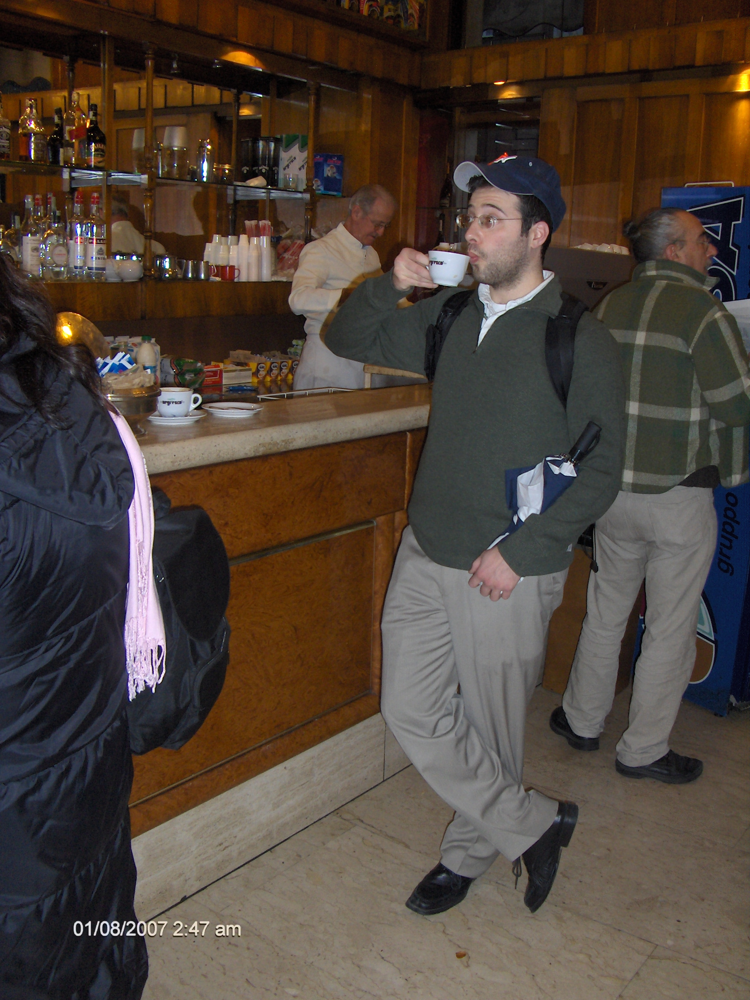

My DBC blog
Projects
Resume
About This Guy

mattopps
In the Beginning There Was Git!
And then there was css
Arrays or Hashes: or Both?
Cycling: An Enumerable
Class is in Session
JS Ruby Throwdown
Sort This
Social Media
Github
LinkedIn
Facebook